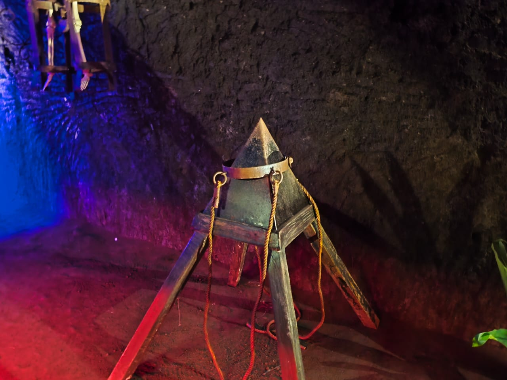

¿Que es la tortura medieval?
Durante la Edad Media, la tortura fue ampliamente utilizada como medio de castigo, confesión y represión. En la oscuridad de las mazmorras, se aplicaban castigos inhumanos con instrumentos diseñados para causar un dolor extremo.
La Guillotina
Dispositivo letal utilizado para ejecutar a los condenados por decapitación. Su hoja afilada caía desde una altura, separando la cabeza del cuerpo. Fue muy usada durante la Revolución Francesa, aunque su origen es medieval.
La Silla de Interrogatorio
Revestida de clavos en el asiento, respaldo y reposabrazos. A veces se aplicaba calor para intensificar el dolor. Su objetivo era quebrar psicológica y físicamente al prisionero.
La Doncella de Hierro
Un sarcófago metálico en forma de mujer con clavos en su interior. Al cerrarse, infligía una agonía lenta. Fue un símbolo brutal de represión.
La Cuna de Judas
Constaba de una pirámide puntiaguda sobre la que se sentaba al prisionero. El peso del cuerpo forzaba heridas extremadamente dolorosas. Se usaba para castigar delitos sexuales o herejía.
El Potro
Una mesa con sogas en los extremos que estiraban el cuerpo de la víctima. Los músculos y huesos eran desgarrados lentamente a medida que se giraban los rodillos.
Jaula Colgante
Las víctimas eran encerradas en jaulas de hierro suspendidas, expuestas al público, al clima y a animales. La muerte llegaba por inanición o condiciones extremas.
